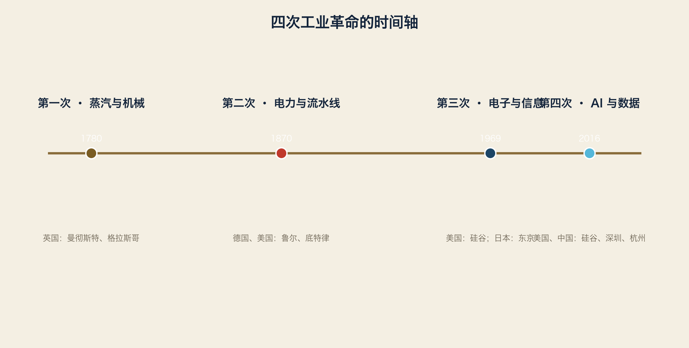

1.1 每一次工业革命，都是一次地图重画
工业革命不是“机器变快了”，而是能源、材料、运输、组织方式同时改变，地图上的城市与权力全部重排。
1.2 第一次：蒸汽与机械（约 1780–1870）
能源：煤炭 + 蒸汽机
材料：铁、钢
运输：运河、铁路
组织：工厂制（取代手工工场）
地理：英国（曼彻斯特、格拉斯哥）、比利时、法国北部
结果：地图从“河流+港口”变成“煤矿+铁路”
1.3 第二次：电力与流水线（约 1870–1969）
能源：电、石油
材料：钢、铝、化工
运输：轮船、汽车、电话
组织：流水线 + 大型企业 + 工会
地理：德国（鲁尔）、美国（底特律、匹兹堡）、日本（战后）
结果：地图从“铁路沿线”变成“电厂+流水线+汽车城”
1.4 第三次：电子与信息（约 1969–2016）
能源：电力 + 半导体
材料：硅、稀土、塑料
运输：集装箱、航空、互联网
组织：全球供应链（外包）、跨国公司
地理：硅谷、东京、新竹、深圳、班加罗尔
结果：地图从“工厂国家”变成“设计与制造分离”
1.5 第四次：AI 与数据（约 2016–）
能源：电力（数据中心成为新工厂）
材料：硅 + 数据（数据成为新原料）
运输：云 + 光纤 + 机器人
组织：算法平台 + 人机协作 + 平台工厂
地理：硅谷、深圳、杭州、合肥、奥斯汀、法兰克福（数据中心带）
结果：地图上新增了“算力节点”和“数据节点”
1.6 四次革命的共同结构
每次革命 = 新能源 × 新材料 × 新运输 × 新组织
每次革命都让上一代的地图贬值，但都不完全作废
煤炭地图没有消失，只是退居后台；轴承地图也一样
词汇笔记（Vokabelnotiz）
| 中文 | Deutsch | English |
|---|---|---|
| 工业革命 | industrielle Revolution | Industrial revolution |
| 重画地图 | Karte neu zeichnen | Remap |
| 算力节点 | Rechenknoten | Compute node |
| 数据原料 | Datenrohstoff | Data as raw material |